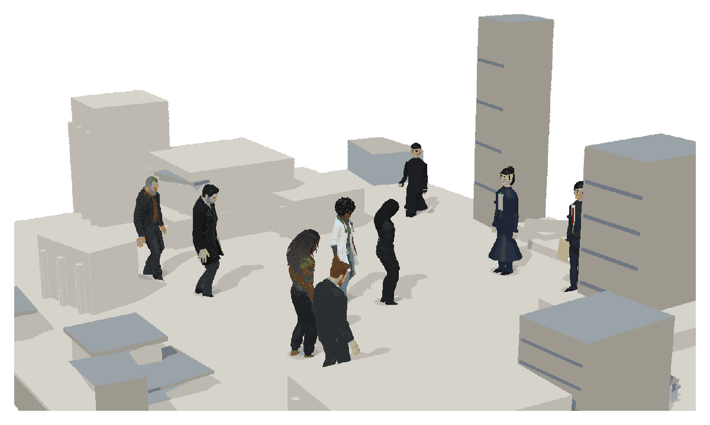
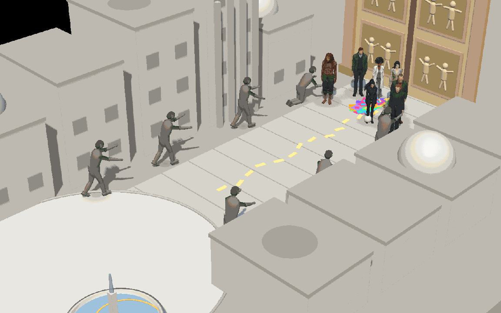

Programa 2 películas · 5 min en total
-

01Sesión 109Película de 2:26
Es tan seguro entrar como vivir
En el dojo de su maestro desaparecido, la cábala sin nombre entrega sus regalos a la Legación Wu Lung y recibe a cambio una bola de cristal arrancada a un nefando. Al llamar a su puerta, el dojo se funde en blanco.
Abrir la escena: Es tan seguro entrar como vivir Ver en YouTube: Es tan seguro entrar como vivir Ver el vídeo de Es tan seguro entrar como vivir MP4 · 30 MB
-

02Sesión 110Película de 2:41
Es tan perfecto que está paralizado
Dentro del Aleph, en una ciudad blanca tan perfecta que nada cambia, la cábala —Liandra por fin en su propio cuerpo— se defiende de la quietud cada uno a su manera camino de las puertas de marfil del centro.
Abrir la escena: Es tan perfecto que está paralizado Ver en YouTube: Es tan perfecto que está paralizado Ver el vídeo de Es tan perfecto que está paralizado MP4 · 53 MB